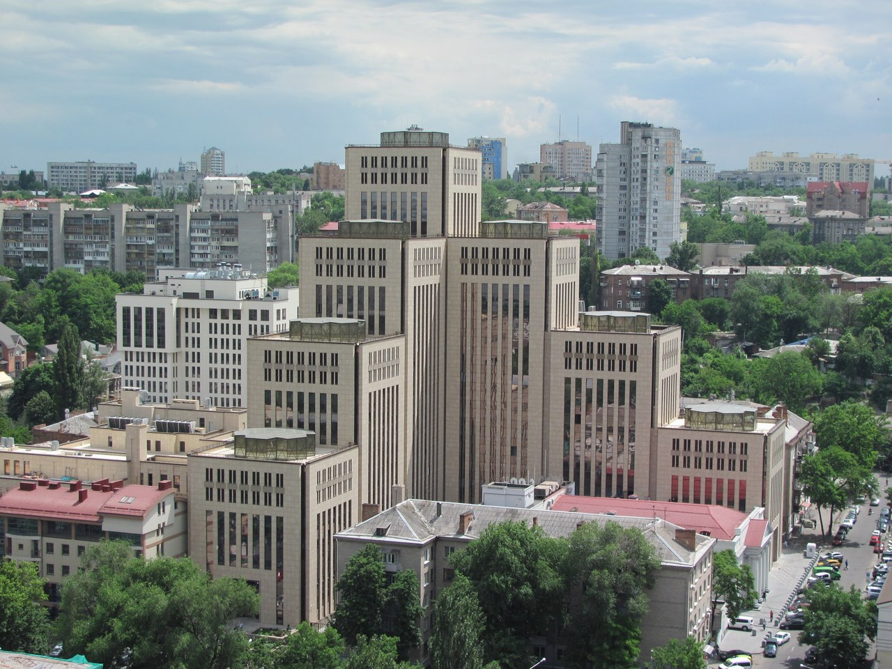
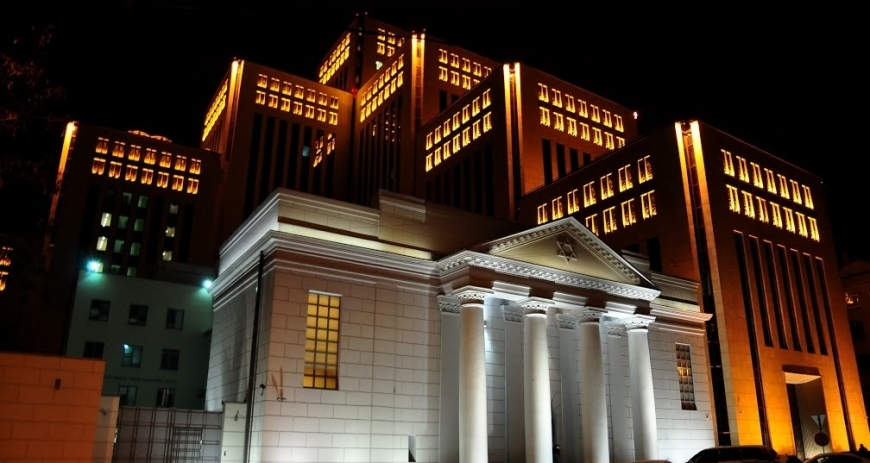
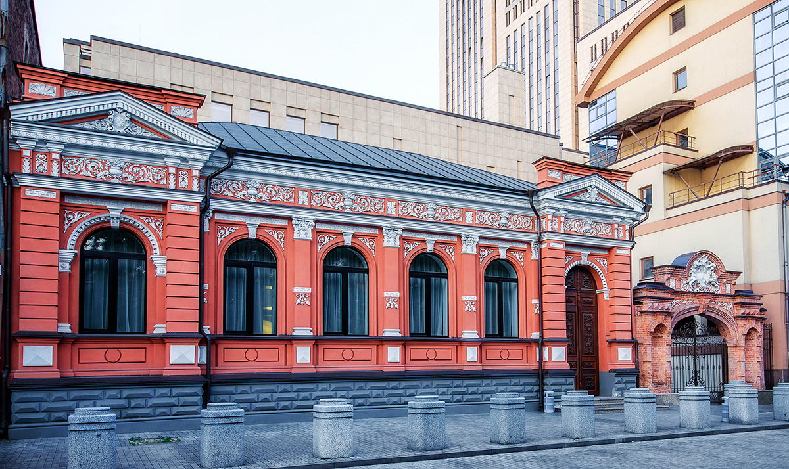

Про Менору
«Менора» – унікальна споруда і найбільший в світі єврейський комплекс, аналогів якому немає в світі. Даний проект відображає минуле, сьогодення і майбутнє єврейського життя Дніпра. Сьогодні «Менора» – це гостинний будинок, наповнений активним культурним і діловим життям, подіями різного масштабу і формату. Можна впевнено сказати, що «Менора» – центр життя і визначна пам’ятка міста, чим насправді може пишатися кожен житель Дніпра.
Архітектура
Автор проекту центру «Менора» — архітектор Олександр Сорін. Комплекс «Менора» складається з 7 веж, що представляють собою Храмовий семисвічник. Загальна площа центру більше 50 000 м². Найвища вежа — 20 поверхова (77 метрів). Перший поверх центру називається Галерея і виконаний з мармуру і унікального єрусалимського каменя. Він був спеціально виготовлений для центру «Менора», після чого виробництво окремої лінії було розібрано, а значить, такий камінь повторити вже неможливо. Даний малюнок є символічним «продовженням» Стіни плачу Єрусалиму.
 
Також в Галереї представлені 12 фасадів старовинного Катеринослава, в яких були розташовані чоловічі і жіночі училища, синагоги, пункти обміну шекелів, мацепекарні і всілякі місця, де проходило єврейське життя міста. У Галереї можна знайти сувенірні магазини, кафе, творчі майстерні, туристичні агентства, відділення банків і багато іншого. Найбільш популярним місцем в центрі є оглядовий майданчик. Він знаходиться на даху 6-ї башти на висоті 18 поверху (63 метра). З нього відкривається панорамний вид на місто Дніпро. Відвідати оглядовий майданчик можна як в ході екскурсії по «Менорі», так і окремо.
Будинок Пчолкіна
 В ансамбль центру «Менора» входить пам'ятник архітектури «Будинок Пчолкіна». Особняк, побудований відомим Катеринославським купцем в 1898 році, за більш ніж 100-річну історію пережив кілька власників і використовувався для самих різних потреб: від комунального житла до ательє і магазинів. У 1996 році будинок отримав статус пам'ятки архітектури. Під час будівництва центру «Менора» він був реконструйований, в залах відновлено унікальне ліплення на стелі, мармурові каміни. Сьогодні вишукані зали «Будинок Пчолкіна» стали популярним майданчиком для організації і проведення різних заходів, весільних церемоній, урочистих бенкетів, конференцій і виставок.
Відео презентація
Локація